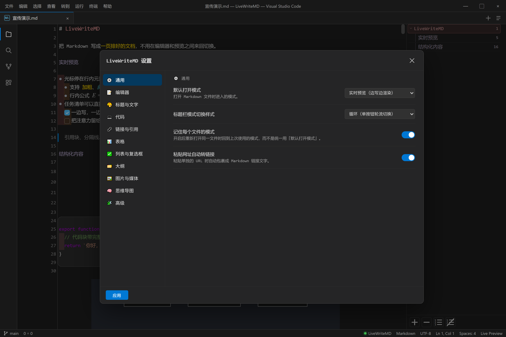
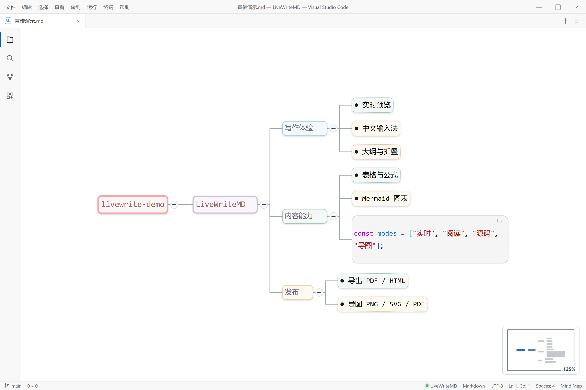

写、梳理、调整、导出——不用离开 VS Code，也不用换一套工具。
打开 .md 就是实时预览，标记语法随手敲。
一键切到导图，拖动节点理清结构。
表格点边线、图表改源码、设置实时生效。
HTML / PDF，或导图 PNG / SVG / PDF。


文档不出本机；KaTeX 与 Mermaid 随扩展打包，不依赖 CDN。
CodeMirror 6 驱动，输入、选择、撤销都是编辑器原生行为。
纯 Markdown，无私有格式，随时可以换一个工具继续写。